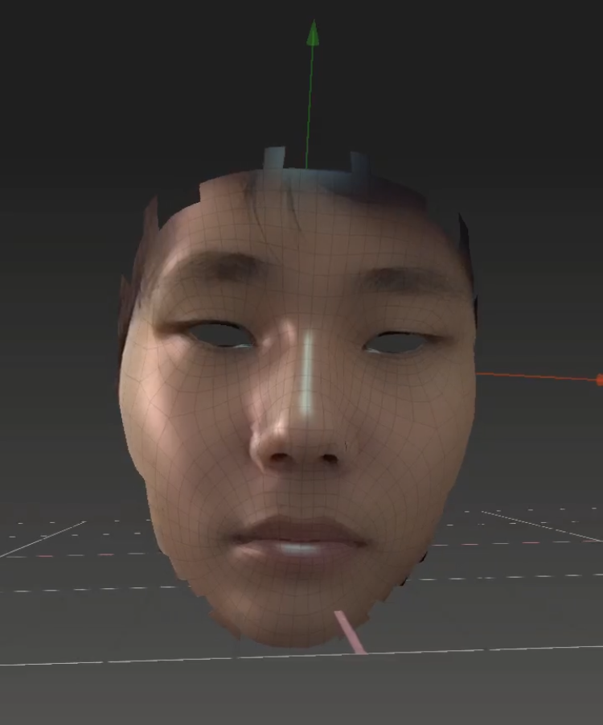

About me
My name is Kai, I'm a 4th year Design Media Arts Major.
One of my focuses within my practice is interactivity. I feel that interactivity
allows one to add multiple dimensions of complexity to art, and therefore are able to deeply explore abstract concepts in a way different from other types of media.
As such, I'm always interested in expanding my knowledge of interactivity on the web, which is why I took this course.
I'm particularly excited to learn more about the types of data visualization is possible on the web, and the stylistic choices
one can implement to make the website both accessible and conceptually interesting.
Regardless of whether the exact things I learn in
this class are directly applicable to my upcoming projects, I'm sure that they will broaden my understanding of HTML, CSS, and JS.
If you would like to see any of my artwork, it's here
My Random Interests
Right now, I'm listening to a lot of 80's Japanese music. I think its because my mom was playing it over the entire winter break and keeps sending me new albums. My current favorite artist is Yamashita Tatsurou.
My favorite album is For You. I've also linked my top 3 favorite albums and my top 3 favorite songs from each album!